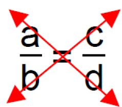

Chapitre 5 : Écriture fractionnaire partie 2
I. Notion d'inverse
Définition : Deux nombres sont inverses si leur produit est égal à 1.
Exemple : L'inverse de 3 est 13 car 13 × 3 = 33 = 1.
Propriété : Soient a et b deux nombres non nuls, l'inverse de la fraction ab est ba car ab × ba = a×bb×a = 1.
Exemple : L'inverse de −23 est 3−2 car −23 × 3−2 = −6−6 = 1.
Remarques :
• Un nombre et son inverse ont le même signe.
• Tous les nombres ont un inverse sauf 0.
II. Divisions
Propriété : Diviser par un nombre, c'est multiplier par son inverse.
C'est-à-dire : a ÷ b = a × 1b
Preuve :
a × 1b = a × 1b = ab = a ÷ b
Propriété : Pour diviser deux fractions, il faut multiplier la première fraction par l'inverse de la deuxième fraction.
Exemple 1 :
12 ÷ 34 = 12 × 43 = 1 × 42 × 3 = 46 = 2 × 22 × 3 = 23
Exemple 2 :
−45 ÷ 34 = −45 × 43 = −1615
Exemple 3 :
57 ÷ 3 = 57 × 13 = 5 × 17 × 3 = 521
Exemple 4 :
23 ÷ 4 = 23 × 14 = 212 = 22 × 2 × 3 = 12 × 3 = 16
III. Produit en croix
Propriété : a, b, c, d désignent quatre nombres relatifs avec b ≠ 0 et d ≠ 0.
Si ab = cd, alors a × d = b × c.
On appelle cette propriété le produit en croix.
Schéma du produit en croix :

Exemple 1 : On cherche un nombre x tel que 52 = 4x.
52 = 4x donc 5 × x = 2 × 4
Ainsi x = 2 × 45 = 85 = 1,6
Exemple 2 : Les quotients 1220 et 1830 sont-ils égaux ?
Méthode 1 : Produit en croix
12 × 30 = 360 et 20 × 18 = 360.
Ainsi, 1220 = 1830
Méthode 2 : Simplification
1220 = 2 × 2 × 32 × 2 × 5 = 35
1830 = 2 × 3 × 32 × 3 × 5 = 35
Donc 1220 = 1830 = 35